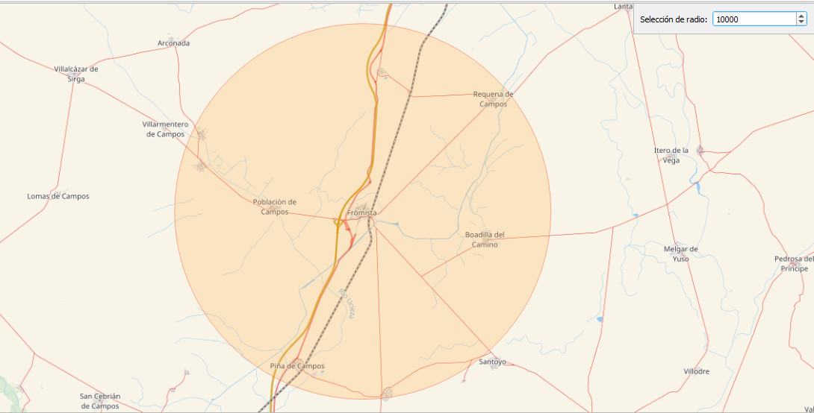
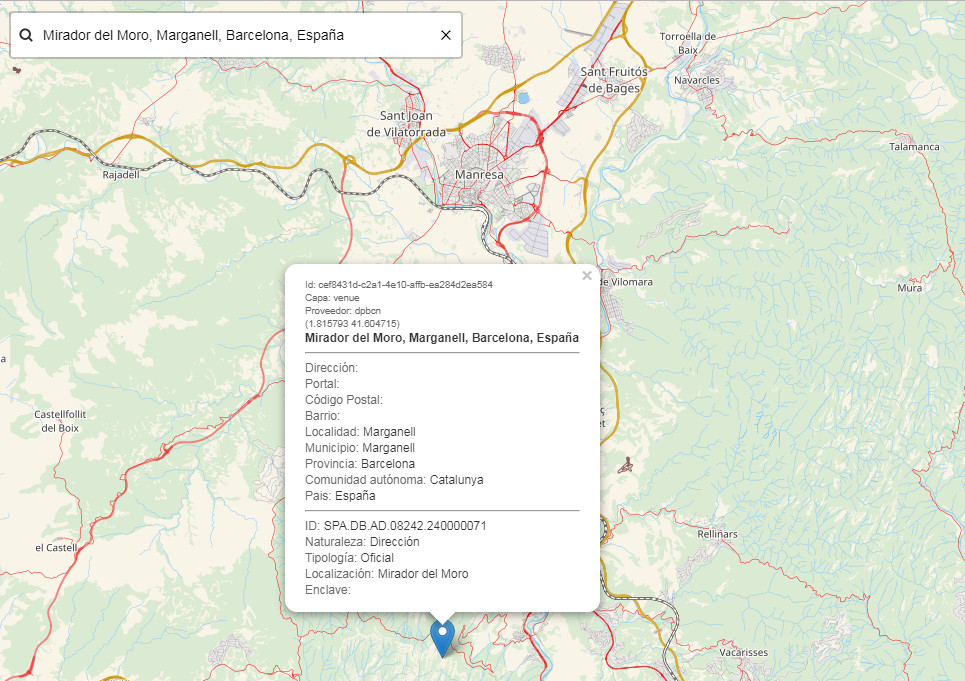

Geolocalización estructurada
El método de geolocalización estructurada, permite buscar las partes individuales de una ubicación. La codificación geográfica estructurada, es una opción del método de geolocalización por identificador geográfico cuya url (endpoint) a la que dirigir la petición es:
https://geolocalizador.idee.es/v1/structured
Por ejemplo, si se desea encontrar la dirección Calle Mayor, 10 en la población de La Muela, provincia de Zaragoza con el método de geolocalización por identificador geográfico es necesario introducir la ubicación completa como una cadena de texto = Calle Mayor, 10 La Muela, Zaragoza. Sin embargo mediante la geolocalización estructurada se puede especificar que esta ubicación se compone de una dirección postal, una localidad y una región.
{
address: 'Calle Mayor, 1',
locality: 'La Muela',
region: 'Zaragoz'
}
La geolocalización estructurada, puede mejorar la forma en que se analizan e interpretan los elementos de consulta en una búsqueda. Al separar los componentes de la entrada de búsqueda se reduce la ambigüedad en su consulta. Este método resulta muy útil en aquellas ocasiones en las que los nombres de vía, numeración, población, municipio, provincia, así como los códigos postales se ordenan de forma aleatoria.
Parámetros
En la búsqueda estructurada se pueden utilizar los siguientes parámetros:
addressneighbourhoodboroughlocalitycountyregionpostalcodecountry
address (dirección)
El parámetro address puede contener el nombre de vía y número de una dirección, o bien solamente el nombre de vía.
Ejemplos:
Calle Mayor, 21
Avenida de España 54
Camino del Calvario
neighbourhood (barrio/vecindario)
Los barrios, los vecindarios y los lugares, así como las parroquias en los territorios de Galicia y Asturias, son estructuras vecinales tradicionales, y aunque en muchos casos pueden no ser necesariamente divisiones administrativas oficiales, resultan estratégicas para facilitar la búsqueda y localización de una dirección.
Ejemplos:
Malasaña
Barrio de la Estación
Parroquia de Seoane de Oleiros
Nota:
El modelo de datos contempla el atributo [**`nucleo`**](../../datos/modelo_de_datos/#27-nucleo) en el que se recoge la información relativa a una agrupación de direcciones de orden inferior a la Entidad Singular. Codifica la pertenencia de una dirección a un barrio, aldea, parroquia, o similar, cuando dicha pertenencia participa en la estructura formal de una dirección.borough (distrito)
El distrito es una fórmula de organización administrativa dentro de un núcleo de población, generalmente de gran tamaño. Aunque su uso en España no está muy generalizado.
Ejemplos:
Eixample
Arganzuela
Camins al Grau
Nota:
La versión actual del [modelo de datos](../../datos/modelo_de_datos) no contempla el atributo *distrito*, por lo que este parámetro **`borough`** aunque técnicamente es operativo, de momento no ofrece resultado alguno.Estos parámetros se pueden combinar con el resto de parámetros de la geolocalización por identificador geográfico con objeto de filtrar y priorizar los resultados.
El formato de interrogación a la API se construye a partir de la url de referencia de este método (/v1/search), seguido del signo ? y de la secuencia de parámetros que configuran la pregunta, separados por el signo &.
Si se desea localizar una dirección que contenga un texto determinado, que es el caso más común, el parámetro a utilizar es text:
| Parámetro | Tipo | Obligatorio | Defecto | Descripción | Ejemplo |
|---|---|---|---|---|---|
text |
cadena de caracteres | sí | ninguno | Texto de la dirección a buscar | Calle Mayor 10 |
En el ejemplo siguiente el texto a buscar en la dirección es «murrieta», para lo cual se añade a la url del método de búsqueda https://geolocalizador.idee.es/v1/search, el signo ? y el parámetro text=murrieta.
https://geolocalizador.idee.es/v1/search?text=murrieta.
Pulsando sobre el enlace anterior se obtiene un fichero en formato GeoJSON que contiene los resultados de la búsqueda que mejor coinciden con el texto «murrieta». El fichero con formato GeoJSON puede ser leído en un navegador web (1) o en un procesador de texto.
En este caso, los resultados obtenidos son los siguientes (2):
BARRIO MURRIETA, Putxeta, Bizkaia, España (-3.091738,43.319819)
CALLE MURRIETA, San Vicente de Barakaldo/San Bizenti-Barakaldo, Bizkaia, España (-2.989928,43.301062)
Calle Marqués de Murrieta, Logroño, La Rioja, España (-2.452761,42.465614)
Configurar el número de resultados
Por defecto la API devuelve hasta 10 resultados. Si se desea un número distinto de resultados, este se puede configurar en la llamada utilizando el parámetro size.
| Parámetro | Tipo | Obligatorio | Defecto | Descripción | Ejemplo |
|---|---|---|---|---|---|
size |
integer | no | 10 | Número deseado de resultados | 5 |
Si en el ejemplo anterior se deseara recibir solamente un único resultado, la sintaxis de la consulta debería ser:
https://geolocalizador.idee.es/v1/search?text=murrieta&size=1.
Siendo el resultado obtenido:
BARRIO MURRIETA, Putxeta, Bizkaia, España (-3.091738,43.319819)
Consulta en un área determinada
Es posible constreñir la búsqueda de direcciones a una región o país en particular, o limitarla a un área específica. La API Pelias que utiliza el geocodificador del SCN permite tres fórmulas para limitar espacialmente la búsqueda: país, rectángulo y círculo.
Búsqueda en un área rectangular
Para limitar la búsqueda a un área geográfica rectangular, es necesario conocer las coordenadas latitud y longitud, mínimas y máximas, que definen el rectángulo (3).
En este caso los parámetros a utilizar son los siguientes:
| Parámetro | Tipo | Obligatorio | Defecto | Descripción | Ejemplo |
|---|---|---|---|---|---|
boundary.rect.max_lat |
numérico coma flotante | no | ninguno | Valor máximo de la latitud utilizado en la búsqueda en una región rectangular (4) | 41.7342 |
boundary.rect.max_lon |
numérico coma flotante | no | ninguno | Valor máximo de la longitud utilizado en la búsqueda en una región rectangular (4) | -0.6585 |
boundary.rect.min_lat |
numérico coma flotante | no | ninguno | Valor mínimo de la latitud utilizado en la búsqueda en una región rectangular (4) | 41.5453 |
boundary.rect.min_lon |
numérico coma flotante | no | ninguno | Valor mínimo de la longitud utilizado en la búsqueda en una región rectangular (4) | -1.1474 |
Por ejemplo, para encontrar una dirección que contenga el texto "mayor" en el área rectangular que muestra la imagen, definida por las coordenadas lat_min=41.5453; lon_min=-1.1474; at_max=41.7342; lon_max=-0.6585.
")
La sintaxis a utilizar es:
Siendo estos los resultados obtenidos (2):
CALLE MAYOR, La Muela, Zaragoza, España (1.117274,41.57985)
CALLE MAYOR (MONTAÑANA), MONTAÑANA, Zaragoza, España (-0.822357,41.684245)
CALLE OSA MAYOR, Zaragoza, España (0.932542,41.639184)
PLAZA MAYOR (CARTUJA), Cartuja Baja, Zaragoza, España (-0.821923,41.604933)
Búsqueda en un área circular
En aquellos casos en los que se desea localizar las direcciones que se encuentran dentro de una distancia a un punto dado, se puede utilizar las búsqueda en un área circular, partiendo de una coordenada central de referencia y el radio en km del círculo dentro del cual se quiere realizar la búsqueda.
Los parámetros a utilizar en este caso son los siguientes:
| Parámetro | Tipo | Obligatorio | Defecto | Descripción | Ejemplo |
|---|---|---|---|---|---|
boundary.circle.lat |
numérico coma flotante | no | ninguno | Valor de la latitud del punto central del círculo utilizado en la búsqueda en una región circular (4) | 42.268 |
boundary.circle.lon |
numérico coma flotante | no | ninguno | Valor de la longitud del punto central del círculo utilizado en la búsqueda en una región circular (4) | -4.405 |
boundary.circle.radius |
numérico coma flotante | no | 50 | Valor del radio (kilómetros) utilizado en la búsqueda en una región circular (4) | 10 |
Por ejemplo, para encontrar una dirección que contenga el texto "mayor" en un área circular de 10 km desde Frómista (Palencia), con coordenadas de referencia (lat,lon) 42.268,-4.405.

La sintaxis a utilizar es:
Que arroja el siguiente resultado:
CALLE MAYOR, Marcilla de Campos, Palencia, España (4.397729,42.317378)
PLAZA MAYOR, Santoyo, Palencia, España (-4.34285,42.214136)
TRAVESIA MAYOR, Boadilla del Camino, Palencia, España (-4.347739,42.259541)
TRVA MAYOR, BOADILLA DEL CAMINO, Palencia, España (-4.34823,42.259339)
Búsqueda aplicando jerarquía administrativa
El almacenamiento de información mantiene internamente una estructuración jerárquica entre lugares, aplicando un concepto denominado jerarquía administrativa, en el que cada registro se asocia a un vecindario, ciudad, región, país y otras regiones principales.
Esta propiedad tiene múltiples aplicaciones entre las que destaca el filtrado de información. El ID global de Pelias (gid) de cualquier registro se puede usar con el filtro boundary.gid para devolver solo registros con un ascendente determinado.
Si se definen varios tipos de regiones en la misma solicitud, los resultados corresponderán a la intersección de todos los límites. Por lo que si las regiones no se superponen, el resultado de la consulta no contendrá datos.
Por el momento no se ha implementado el gid en las tablas de regiones, por lo que parámetro boundary.gid no genera resultados específicos.
Priorización de resultados por proximidad
En algunas ocasiones es conveniente presentar los resultados más cercanos a una ubicación o región en la parte superior de la lista sin renunciar a otros resultados que se encuentran geográficamente más lejanos.
La geolocalización directa permite priorizar los resultados dentro de los límites geográficos, incluso alrededor de un punto, dentro de un país o dentro de una región.
Priorizar la proximidad a un punto
Aplicando a la búsqueda el parámetro focus.point, los resultados se ordenarán en parte por su proximidad a la coordenada dada.
Para las mismas condiciones, los resultados más cercanos al punto aparecerán en la parte superior de la relación. Sin embargo, a diferencia de las consultas circunscritas a áreas rectangulares o circulares, este parámetro puede devolver resultados muy distantes de la coordenada de referencia.
Los parámetros a utilizar para la consulta por proximidad a un punto son:
| Parámetro | Tipo | Obligatorio | Defecto | Descripción | Ejemplo |
|---|---|---|---|---|---|
focus.point.lat |
numérico coma flotante | no | ninguno | Valor de la latitud utilizado en la búsqueda alrededor de un punto (4) | 42.268 |
focus.point.lon |
numérico coma flotante | no | ninguno | Valor de la longitud utilizado en la búsqueda alrededor de un punto (4) | -4.405 |
Si repetimos la consulta de ejemplo utilizada en la busqueda por círculo, pero en este caso utilizando las coordenadas de Frómista para consultar por proximidad a un punto:
https://geolocalizador.idee.es/v1/search?text=mayor&focus.point.lat=42.268&focus.point.lon=-4.405.
Se obtiene el siguiente resultado:
CALLE MAYOR, Población de Campos, Palencia, España"(-4.448308,42.270092) [distancia: 3.575]
TRVA MAYOR, BOADILLA DEL CAMINO, Palencia, España (-4.34823,42.259339) [distancia: 4.775]
TRAVESIA MAYOR, Boadilla del Camino, Palencia, España (-4.347739,42.259541) [distancia: 4.810]
PLAZA MAYOR, BOADILLA DEL CAMINO, Palencia, España (4.347215,42.259306) [distancia: 4.858]
Búsqueda combinada priorizada dentro de un área
Es posible combinar en la misma consulta la búsqueda en un área determinada, ordenando al mismo tiempo los resultados por su proximidad a un punto dado.
En el siguiente ejemplo se prioriza la búsqueda en un área rectangular en las proximidades de Zaragoza, priorizando la proximidad a su esquina de coordenadas latitud,longitud mínimas:
El resultado obtenido por orden de priorización es:
CALLE MAYOR, La Muela, Zaragoza, España (1.122955,41.577862) [distancia: 4.158]
CALLE MAYOR (GARRAPINILLOS), Garrapinillos, Zaragoza, España (1.028693,41.682992) [distancia: 18.236]
CALLE OSA MAYOR, ZARAGOZA, España (-0.932936,41.637167) [distancia": 20.577]
Filtrado de la búsqueda
Filtrado por origen de los datos
El almacén de datos de referencia en este geocodificador permite combinar datos procedentes de distintas fuentes, de hecho, uno de los objetivos principales del proyecto es definir un modelo de datos neutro en formato CSV, con objeto de poder cargar datos provenientes de distintos productores.
La API Pelias ofrece la posibilidad de seleccionar, entre todos, el conjunto de datos de referencia al cual dirigir la búsqueda.
En la fase de pruebas se han cargado direcciones de las siguientes fuentes de datos (5).
Cuando se realiza una consulta, se dirige por defecto al conjunto de todas las direcciones que están almacenadas en la base de datos.
Utilizando el parámetro sources, es posible definir sobre qué conjuntos de datos realizar la petición.
| Parámetro | Tipo | Obligatorio | Defecto | Descripción | Ejemplo |
|---|---|---|---|---|---|
sources |
cadena de caracteres | no | todas las fuentes | Listado de fuentes de datos separados por comas, codificados según lista controlada Proveedores de datos | cnig,calrj |
El siguiente ejemplo realiza una consulta general a toda la base de datos:
https://geolocalizador.idee.es/v1/search?text=mayor 10 Briones.
En tanto que el siguiente ejemplo dirige la consulta solamente a los datos aportados por el Gobierno de La Rioja:
https://geolocalizador.idee.es/v1/search?text=mayor 10 Briones&sources=calrj.
Filtrado por tipo de datos
El almacenamiento de datos se realiza en tablas diferentes en función de su naturaleza, lo que permite diferenciar tres tipología de datos: direcciones; topónimos y puntos de interés (POIs).
El parámetro layers permite dirigir la petición de información a las siguientes capas, con el fin de obtener el resultado deseado:
| layer (capa) | descripción |
|---|---|
| venue | topónimos; puntos de interés; nombres propios de las direcciones |
| address | puntos con una dirección postal |
| street | calles; vías; carreteras |
El uso del parámetro layers es el siguiente:
| Parámetro | Tipo | Obligatorio | Defecto | Descripción | Ejemplo |
|---|---|---|---|---|---|
layers |
cadena de caracteres | no | todas las capas | Nombres de las capas de datos a las que se dirije la consulta, separados por comas | venue, street |
Ejemplos:
Búsqueda del topónimo Mirador del Moro: https://geolocalizador.idee.es/v1/search?text=Mirador del Moro&layers=venue.

Búsqueda del punto de interés Cortijo Majón:
https://geolocalizador.idee.es/v1/search?text=Cortijo Majón&layers=venue.
")
Cuadro de parámetros
Esta es la relación de parámetros que se pueden utilizar en las operaciones de geolocalización por identificador geográfico:
| Parámetro | Tipo | Obligatorio | Defecto | Descripción | Ejemplo |
|---|---|---|---|---|---|
boundary.circle.lat |
numérico coma flotante | no | ninguno | Valor de la latitud del punto central del círculo utilizado en la búsqueda en una región circular (4) | 42.268 |
boundary.circle.lon |
numérico coma flotante | no | ninguno | Valor de la longitud del punto central del círculo utilizado en la búsqueda en una región circular (4) | -4.405 |
boundary.circle.radius |
numérico coma flotante | no | 50 | Valor del radio (kilómetros) utilizado en la búsqueda en una región circular (4) | 10 |
boundary.country |
cadena de caracteres | no | ninguno | NO IMPLEMENTADO |
|
boundary.gid |
cadena de caracteres | no | ninguno | NO IMPLEMENTADO |
|
boundary.rect.max_lat |
numérico coma flotante | no | ninguno | Valor máximo de la latitud utilizado en la búsqueda en una región rectangular (4) | 41.7342 |
boundary.rect.max_lon |
numérico coma flotante | no | ninguno | Valor máximo de la longitud utilizado en la búsqueda en una región rectangular (4) | -0.6585 |
boundary.rect.min_lat |
numérico coma flotante | no | ninguno | Valor mínimo de la latitud utilizado en la búsqueda en una región rectangular (4) | 41.5453 |
boundary.rect.min_lon |
numérico coma flotante | no | ninguno | Valor mínimo de la longitud utilizado en la búsqueda en una región rectangular (4) | -1.1474 |
focus.point.lat |
numérico coma flotante | no | ninguno | Valor de la latitud utilizado en la búsqueda alrededor de un punto (4) | 42.268 |
focus.point.lon |
numérico coma flotante | no | ninguno | Valor de la longitud utilizado en la búsqueda alrededor de un punto (4) | -4.405 |
layers |
cadena de caracteres | no | todas las capas | Nombres de las capas de datos a las que se dirije la consulta, separados por comas | venue, street |
size |
integer | no | 10 | Número deseado de resultados | 5 |
sources |
cadena de caracteres | no | todas las fuentes | Listado de fuentes de datos separados por comas, codificados según lista controlada Proveedores de datos | cnig,calrj |
text |
cadena de caracteres | sí | ninguno | Texto de la dirección a buscar | Calle Mayor 10 |